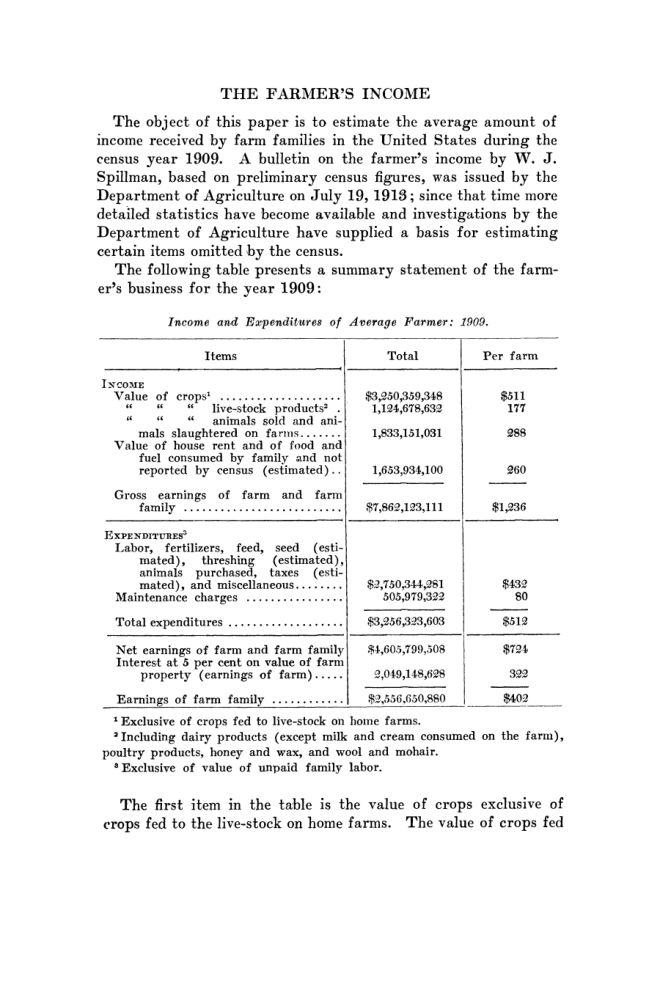

Goldenweiser e a conta da família agricultora
Leitura: 8 min
Com o censo de 1909 e pesquisas do Departamento de Agricultura, E. A. Goldenweiser monta a conta da fazenda americana média: US$ 1.236 de receita, US$ 724 líquidos e US$ 402 para o trabalho da família.


Uma família agricultora americana média recebia da própria fazenda, em 1909, o equivalente a US$ 125 de aluguel da casa onde morava, US$ 35 de combustível e US$ 261 de comida. Nenhum desses valores passava pelo mercado, e boa parte deles não aparecia nos questionários do censo.
Somá-los ao que o censo registrava é o principal trabalho de E. A. Goldenweiser no artigo de sete páginas que publicou na American Economic Review de março de 1916. O objetivo é estimar a renda média das famílias agricultoras dos Estados Unidos no ano censitário de 1909. Um boletim anterior sobre o mesmo tema, de W. J. Spillman, saíra em 19 de julho de 1913 com dados preliminares; desde então havia estatísticas mais detalhadas e pesquisas do Departamento de Agricultura que permitiam estimar o que o censo omitia.
Como se monta a receita?
O primeiro cuidado é não contar duas vezes. O valor de todas as safras era de US$ 5,487 bilhões, mas parte delas virava ração dos animais da própria fazenda e reaparecia no valor dos produtos animais. O autor calcula essa parte: das culturas que servem de ração, milho, aveia, cevada, feno e forragens, valendo US$ 2,786 bilhões, saem US$ 509 milhões vendidos e US$ 40 milhões de milho consumido pelas famílias do Cinturão do Algodão, à razão de US$ 20 por fazenda. Restam US$ 2,236 bilhões consumidos pelos animais, que se subtraem do total.
À receita das safras somam-se os produtos animais, laticínios, ovos, mel, lã, e os animais vendidos ou abatidos, num total de US$ 2,958 bilhões. Falta o que a fazenda dá diretamente à família. Para isso Goldenweiser usa o Farmers' Bulletin nº 635, de W. C. Funk, do Office of Farm Management, com 483 famílias espalhadas pelo país: em média, US$ 125 de aluguel da casa, US$ 35 de combustível e US$ 47 de leite e creme.
O aluguel tem uma razão contábil: o agricultor é cobrado em juros de 5% e manutenção sobre toda a propriedade, inclusive a casa, e precisa ser creditado pelo uso dela. Para os alimentos que o recenseador deixava escapar, como aves, ovos, carne de porco e de boi, verduras e frutas, o autor eleva os US$ 47 para US$ 100. O total não registrado pelo censo chega a US$ 260 por fazenda; somado aos US$ 161 de comida que o censo provavelmente contava, a contribuição direta da fazenda à família chega a US$ 421.
Quais são as despesas?
O censo dava quatro grandes itens: mão de obra contratada, US$ 651 milhões; adubos, US$ 115 milhões; ração comprada, US$ 300 milhões; animais comprados, US$ 840 milhões. O autor estima as sementes, cerca de US$ 200 milhões, pela área de cada cultura, pela quantidade semeada por acre em cada região, obtida com agentes do Departamento de Agricultura, e pelo preço médio; e a debulha, cerca de US$ 90 milhões. Os itens enumerados somam US$ 2,195 bilhões, ou US$ 345 por fazenda.
A esses itens somam-se impostos, estimados em 0,6% do valor da propriedade, e manutenção de 5% sobre o valor dos prédios e de 15% sobre o das máquinas e implementos, o que leva o total a US$ 2,947 bilhões. Um acréscimo para despesas gerais, baseado em levantamentos de administração rural, completa US$ 3,256 bilhões, ou US$ 512 por fazenda. O trabalho não pago da família não entra como despesa.
E as hipotecas e a valorização da terra?
Os juros pagos sobre hipotecas reduzem o rendimento da fazenda, mas não o ganho da família. Só que não havia estatística satisfatória: o censo informava hipotecas apenas para fazendas operadas pelos donos, e um terço delas declarou hipoteca. Se a proporção e o valor médio fossem iguais entre arrendatários, os juros seriam de cerca de US$ 34 por ano e o rendimento líquido cairia para US$ 690. O autor acha a hipótese exagerada e conclui que o ajuste não muda as médias.
A valorização da propriedade é outra questão. Dividindo por dez a diferença entre os valores de 1910 e de 1900, Goldenweiser obtém um aumento médio de US$ 2,055 bilhões por ano, ou US$ 323 por fazenda: US$ 242 na terra, US$ 44 nos prédios, US$ 8 em máquinas e US$ 29 nos animais. Parte é fruto do trabalho de melhoria; parte, a participação do agricultor no aumento da riqueza nacional. Como o censo de 1900 foi feito em junho e o de 1910 em abril, o aumento dos rebanhos fica subestimado.
Ele não soma esse ganho à renda. A valorização da terra, quando real, é a capitalização de preços maiores dos produtos, e o agricultor já a recebe em receitas maiores. Parte pode ser sobrevalorização pelos próprios donos, e o ganho só se realiza se a fazenda for vendida, já que o preço da terra também pode cair.
“Depende de um grande número de fatores, sobre muitos dos quais ele não tem controle.” (“dependent on a large number of factors over many of which he has no control”)
Até onde vão as médias?
O autor enumera as limitações. As médias nacionais escondem condições muito diferentes entre regiões, e não havia dados regionais detalhados; mais úteis seriam números por faixa de renda, que não existiam. Não há separação entre o proprietário e o arrendatário, que depende quase só do trabalho da família. O ano é um só, embora 1909 lhe pareça representativo. O censo incluía pequenas propriedades perto das cidades, mas fazendas de menos de 3 acres só entravam se produzissem US$ 250 em safras ou ocupassem um homem em tempo integral, e eram só 18 mil em 1910, cerca de 0,3% do total. A renda de trabalho fora da fazenda não está nos números.
Da renda líquida de US$ 724, a família recebia US$ 303 em dinheiro, US$ 35 em combustível, US$ 125 em aluguel e US$ 261 em comida. A comparação com a cidade fecha o artigo. A mesma comida custaria pelo menos US$ 100 a mais, e aluguel e combustível também; os US$ 400 da família agricultora corresponderiam a US$ 600 ou mais de um operário urbano. O autor reconhece que o ganho não supera muito o de um peão a US$ 30 por mês, com casa e comida, mas sustenta que a população rural americana, de mais de 30 milhões de pessoas, tinha a maior renda média por família entre os grupos de tamanho comparável no mundo.
Na minha leitura
Na minha leitura, o artigo é um exercício exemplar de contabilidade nacional antes de ela ter esse nome. Goldenweiser separa o consumo intermediário da fazenda para não contar duas vezes, imputa o aluguel da casa própria e o autoconsumo, distingue o rendimento do capital do rendimento do trabalho e trata a valorização da terra como ganho de capital, não como renda corrente. São as mesmas decisões que as contas nacionais tomariam décadas depois.
O texto também mostra o peso das hipóteses. A renda da família é um resíduo: depende da taxa de 5% atribuída ao capital, das estimativas de sementes, debulha e despesas gerais e do valor dado ao que a fazenda fornece. O autor declara cada uma delas, o que permite ao leitor refazer a conta com outras premissas.
Glossário
- Ano censitário
- período de doze meses a que se referem os dados de produção do censo, aqui 1909.
- Autoconsumo
- parte da produção da fazenda consumida pela própria família, sem passar pelo mercado.
- Aluguel imputado
- valor atribuído ao uso da casa própria, como se fosse alugada.
- Rendimento líquido
- receita bruta menos as despesas de produção, antes de remunerar o capital próprio.
- Ganho da família
- rendimento líquido menos os juros atribuídos ao capital investido na fazenda.
- Debulha
- separação dos grãos da palha, então feita por máquinas contratadas.
Fontes
- The Farmer's Income — E. A. Goldenweiser (Washington, D. C.) (pp. 42–48). JSTOR · Internet Archive (PDF)
- Edição completa, com os demais artigos: Nº 139 do Arquivo.
Documento em domínio público (EUA, publicado antes de 1931), via JSTOR Early Journal Content e Internet Archive. Resumo e comentário do autor deste site, sem afiliação com a American Economic Association. Encontrou um erro? Escreva: a correção é publicada no próprio texto, com data.
↑ Nº 139 · O lucro do pequeno negócio, o padrão de vida e a renda da fazenda Usher e a certeza dos mercados modernos →